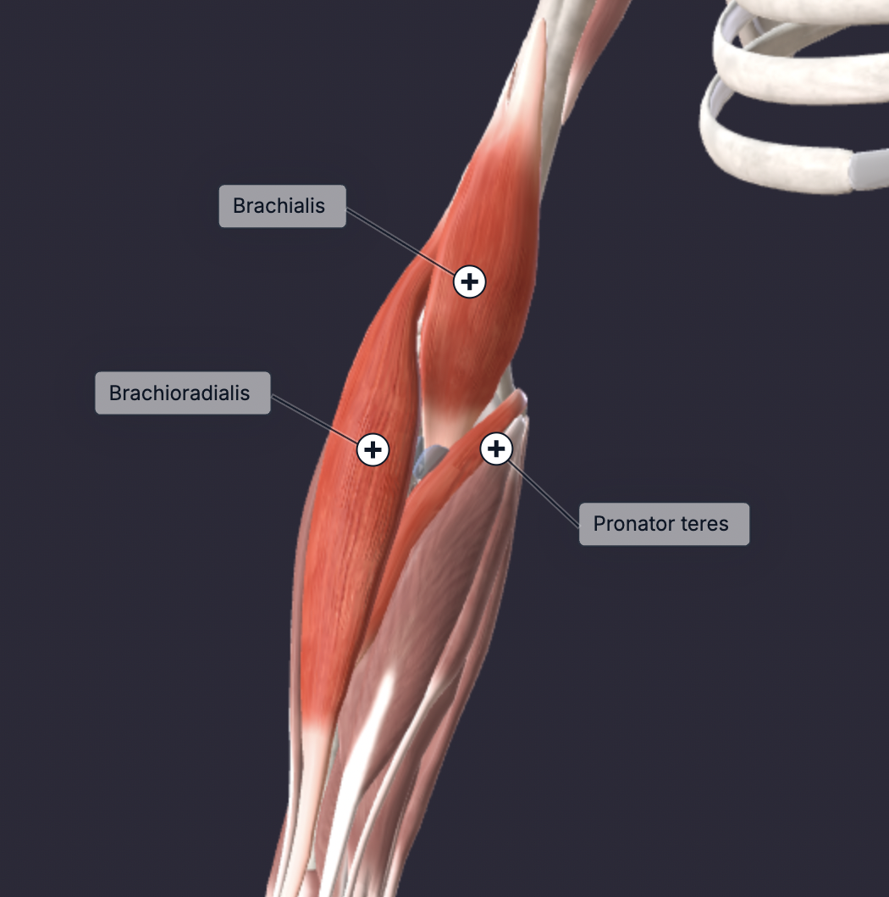

There are 20 muscles in the forearm that help move your arms, hands, and fingers. There are two main categories of the forearm muscles: intrinsic and extrinsic. Intrinsic muscles help move your forearms by turning your bones inward and outward, while extrinsic muscles help bend and extend your fingers and thumbs. Alongside this, your forearm muscles are within two compartments: anterior and posterior. The most prominent muscles are located in the posterior, in the superficial layer. These include the brachioradialis, extensor carpi radialis longus, and flexor carpi ulnaris and radialis. The function of brachioradialis is to flex the elbow when the arm is in a neutral or pronated grip.
The smaller muscles in the forearm will always be indirectly trained when you grip something. Thus we will focus on the brachioradialis muscle. Since the biceps brachii become disadvantaged when the forearm is in a neutral or pronated position, it is best to do any curl in a neutral/pronated grip. Recall from the biceps page that the brachialis is advantaged in a neutral or pronated grip. Therefore any exercise that trains the brachioradialis also trains the brachialis, so it is best to pair one of the following curls with a supinated curl when training the biceps.
Pick any exercise that you find most comfortable and do it for 2-3 sets based on preference.
Now if you wanted to train the forearms specifically, it would be in your best interest to do exercises that flex/extend the wrist.
